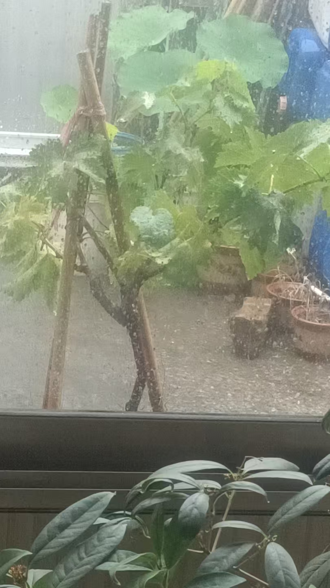
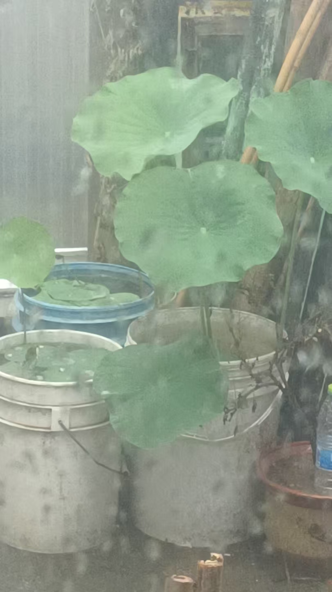
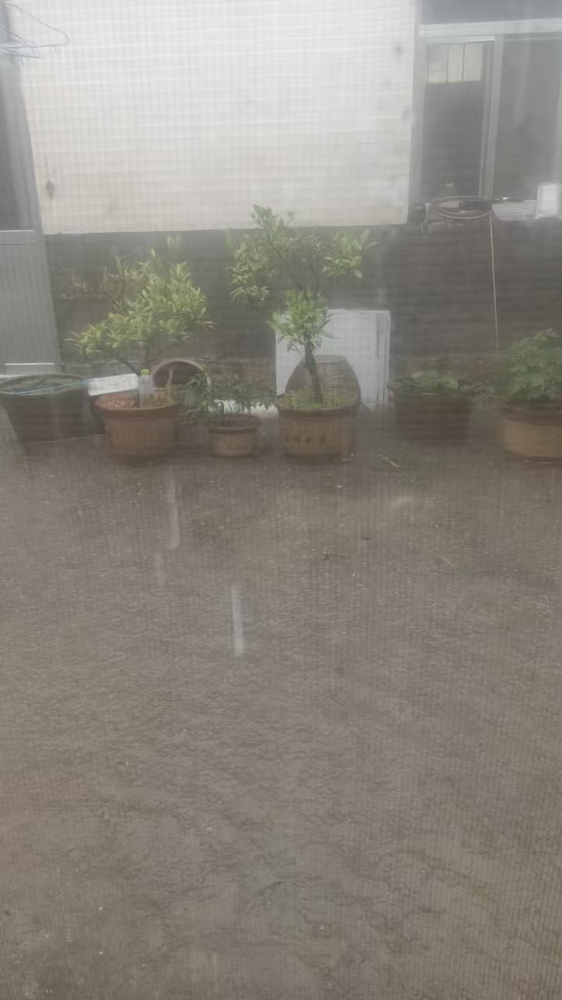
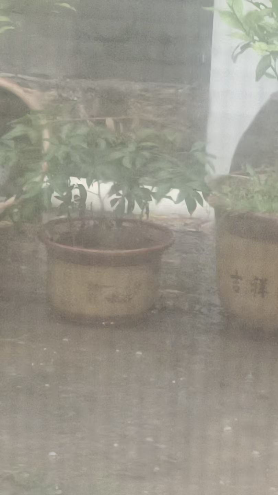
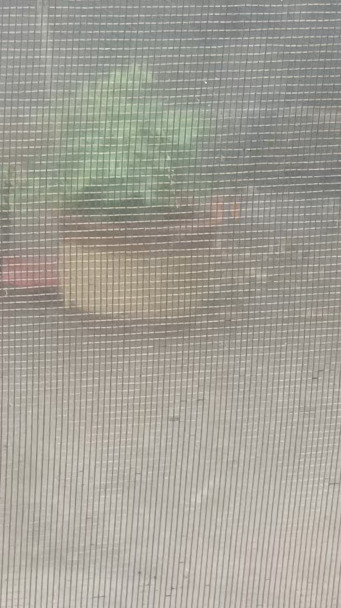
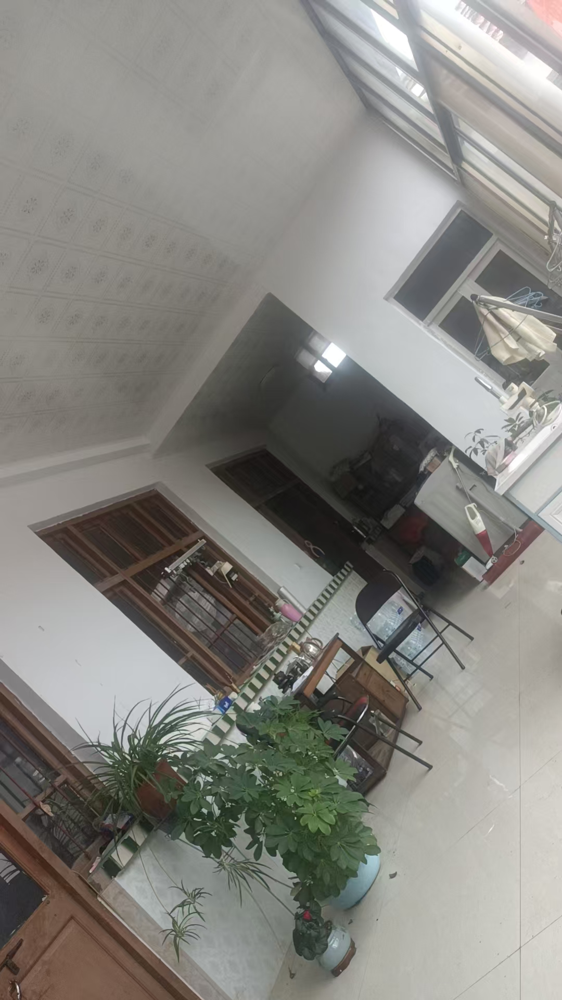
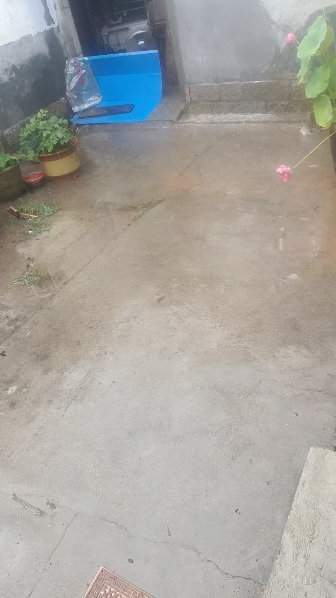

20260630荷花芙蕖开，一花一世界 一花是一个佛世界，不同的佛世界 。这也是一句咒语，会改变家里气场
符咒术法俺娘煎了茄盒
我炸了个花鲢鱼
酒过两巡
雨必下足
我就说，我以成就
必润泽一方
中雨
细雨长且久，灵泽润九州
好雨
赏雨
我爹说，今年雨水第一次地下流水

越过桂花，葡萄

三个桶里是今年新栽的荷花
长势更好
只是还没有花苞

前边两个盆里是芙蕖
也还没开
我脑海里出现两个一米二的大缸
这就是说，明年换大缸
花开艳丽
也就是脑屏指令
必须买必须换
我也不敢不听

三棵芍药，明年分开

这牡丹一堆，明年也分成三盆
[憨笑][憨笑][憨笑][憨笑]金枣，桔子，佛手
我穷的时候，屋里透风，
他们年年结果

这几年，接了三米大厦子，温度高了
开花早，没有蜜蜂
受不了粉
也就不结果了
只有金枣，是第二次开花，能结果
前几天，那孩子要柠檬叶泡水喝，我买了棵柠檬，八年苗
还没到货 所以，过几天家里还会多一棵柠檬
大雨，下的不小啊
四点以后结束
地里也够了
实际这样说话是很吓人的
荷花芙蕖开，一花一世界
一花是一个佛世界，不同的佛世界
这也是一句咒语，会改变家里气场

风停雨住